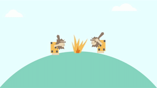
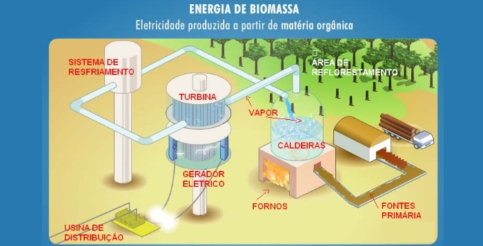
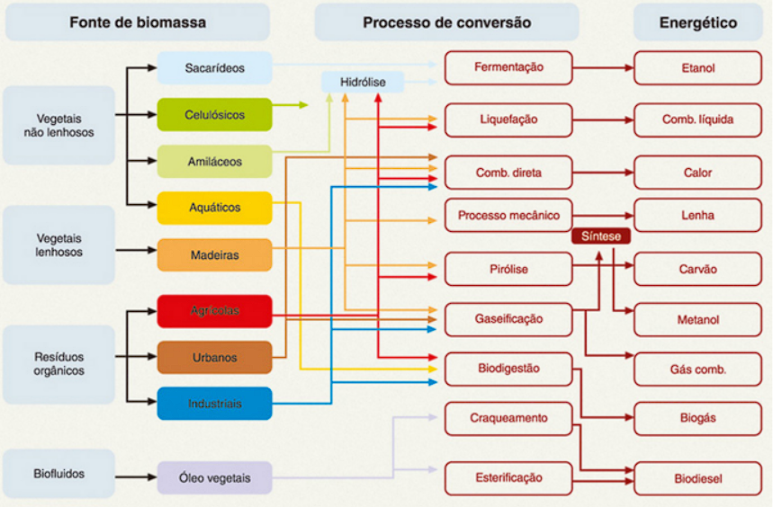

Biomassa
Alunos: João Pedro; João Pedro; Edvaldo; Matheus Vidal.


Biomassa é toda matéria orgânica, de origem vegetal ou animal, utilizada na produção de energia.
Ela é obtida através da decomposição de uma variedade de recursos renováveis, como plantas, madeira, resíduos agrícolas, restos de alimentos, excrementos e até do lixo.
Vegetais não lenhosos, lenhosos e resíduos orgânicos
Produção de Energia Elétrica: A biomassa pode ser queimada em caldeiras para produzir vapor, que aciona turbinas geradoras de eletricidade. Este método é amplamente utilizado em países como Brasil, China e Índia.
Produção de Biocombustíveis: A biomassa pode ser convertida em biocombustíveis líquidos, como etanol e biodiesel, através de processos de fermentação. Esses combustíveis são usados em veículos automotivos e ajudam a reduzir a dependência de combustíveis fósseis.
Aquecimento e Cozinha: Em muitas áreas rurais, a biomassa é utilizada diretamente como lenha ou em forma de pellets para aquecimento e cocção de alimentos.
Indústria Química: A biomassa pode ser transformada em produtos químicos, como plásticos biodegradáveis, solventes e lubrificantes, substituindo derivados do petróleo.
